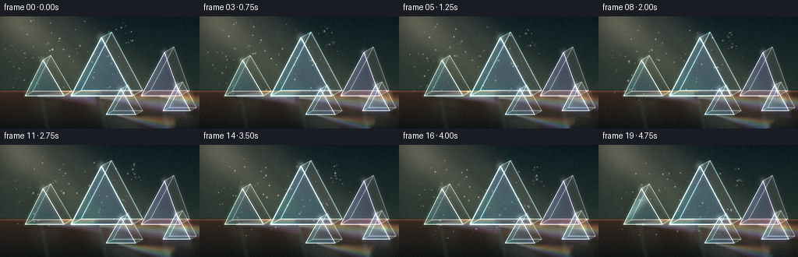
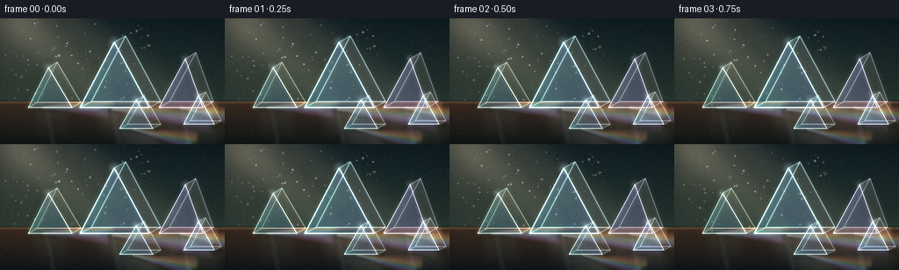
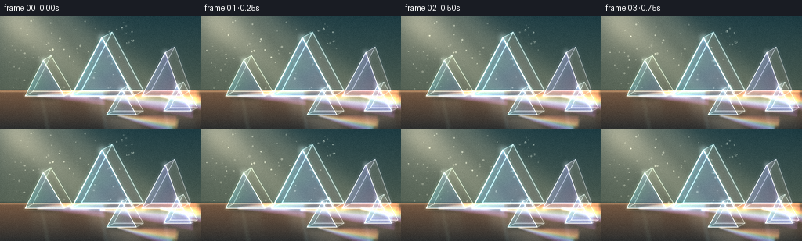
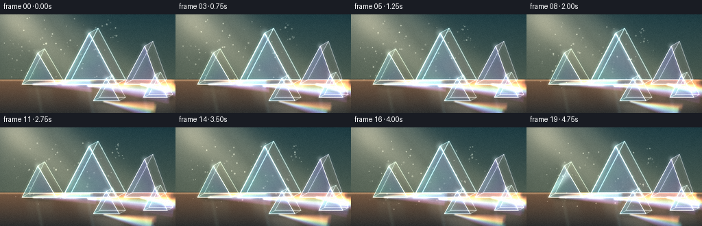
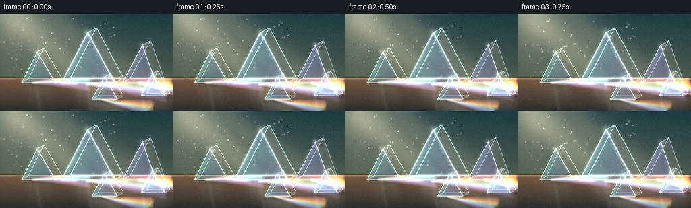
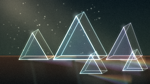
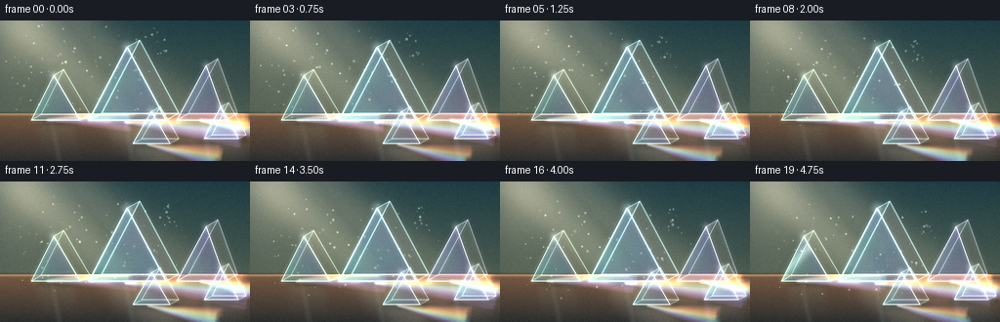
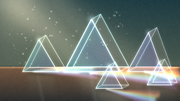
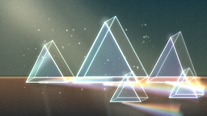
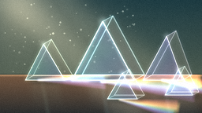

CODING AGENTS AS PIXEL WORLD MODELS
traex/DeepSeek-V4.1-Flash · phygen_080
点击播放 · 原生 RGB 像素
逐轮保存的候选
回放视频、检查图与代码变化。
每份候选均可单独播放。实际图片检查记录在下方工具轨迹中。
候选 01播放与检查图
点击播放 · 原生 RGB 像素


展开代码变化
--- 上一保存版本
+++ 本次保存版本
@@ -0,0 +1,509 @@
+"""Procedural RGB video: sunlight dispersing through a collection of glass prisms."""
+
+from __future__ import annotations
+
+import math
+from pathlib import Path
+
+import numpy as np
+from PIL import Image, ImageDraw, ImageFilter
+from scipy.ndimage import gaussian_filter
+
+import artifact_io
+
+
+W, H = 256, 144
+SS = 4
+WS, HS = W * SS, H * SS
+FPS = 4.0
+FRAMES = 20
+HORIZON = 95.0
+CASE_DIR = Path(__file__).resolve().parent
+
+
+def rgb(hex_value: str) -> np.ndarray:
+ value = hex_value.lstrip("#")
+ return np.array([int(value[i : i + 2], 16) for i in (0, 2, 4)], dtype=np.float32) / 255.0
+
+
+def coordinates() -> tuple[np.ndarray, np.ndarray]:
+ yy, xx = np.mgrid[0:HS, 0:WS].astype(np.float32)
+ return xx / SS, yy / SS
+
+
+def vertical_gradient(y0: float, y1: float, c0: np.ndarray, c1: np.ndarray) -> np.ndarray:
+ yy = np.arange(HS, dtype=np.float32)[:, None] / SS
+ t = np.clip((yy - y0) / max(y1 - y0, 1e-5), 0.0, 1.0)
+ gradient = c0[None, None, :] * (1.0 - t[..., None]) + c1[None, None, :] * t[..., None]
+ return np.broadcast_to(gradient, (HS, WS, 3)).copy()
+
+
+def polygon_mask(points, blur: float = 0.0) -> np.ndarray:
+ mask = Image.new("L", (WS, HS), 0)
+ draw = ImageDraw.Draw(mask)
+ draw.polygon([(float(x) * SS, float(y) * SS) for x, y in points], fill=255)
+ if blur > 0:
+ mask = mask.filter(ImageFilter.GaussianBlur(blur * SS))
+ return np.asarray(mask, dtype=np.float32) / 255.0
+
+
+def line_mask(points, width: float, blur: float = 0.0) -> np.ndarray:
+ mask = Image.new("L", (WS, HS), 0)
+ draw = ImageDraw.Draw(mask)
+ draw.line(
+ [(float(x) * SS, float(y) * SS) for x, y in points],
+ fill=255,
+ width=max(1, round(width * SS)),
+ joint="curve",
+ )
+ if blur > 0:
+ mask = mask.filter(ImageFilter.GaussianBlur(blur * SS))
+ return np.asarray(mask, dtype=np.float32) / 255.0
+
+
+def ellipse_mask(cx: float, cy: float, rx: float, ry: float, blur: float = 0.0) -> np.ndarray:
+ mask = Image.new("L", (WS, HS), 0)
+ draw = ImageDraw.Draw(mask)
+ draw.ellipse(
+ ((cx - rx) * SS, (cy - ry) * SS, (cx + rx) * SS, (cy + ry) * SS),
+ fill=255,
+ )
+ if blur > 0:
+ mask = mask.filter(ImageFilter.GaussianBlur(blur * SS))
+ return np.asarray(mask, dtype=np.float32) / 255.0
+
+
+def composite(dst: np.ndarray, color, mask: np.ndarray, opacity: float = 1.0) -> None:
+ alpha = (mask * opacity)[..., None]
+ color = np.asarray(color, dtype=np.float32)
+ if color.ndim == 1:
+ color = color[None, None, :]
+ dst *= 1.0 - alpha
+ dst += color * alpha
+
+
+def add_light(dst: np.ndarray, color, mask: np.ndarray, intensity: float = 1.0) -> None:
+ dst += np.asarray(color, dtype=np.float32)[None, None, :] * (mask * intensity)[..., None]
+
+
+def face_gradient(
+ dst: np.ndarray,
+ points,
+ color_top,
+ color_bottom,
+ opacity: float,
+ blur: float = 0.0,
+) -> np.ndarray:
+ mask = polygon_mask(points, blur)
+ y0 = min(p[1] for p in points)
+ y1 = max(p[1] for p in points)
+ yy = np.arange(HS, dtype=np.float32)[:, None] / SS
+ t = np.clip((yy - y0) / max(y1 - y0, 1e-5), 0.0, 1.0)
+ color = np.asarray(color_top)[None, None, :] * (1.0 - t[..., None])
+ color += np.asarray(color_bottom)[None, None, :] * t[..., None]
+ color = np.broadcast_to(color, (HS, WS, 3))
+ composite(dst, color, mask, opacity)
+ return mask
+
+
+def hue_rgb(hue: np.ndarray, saturation: np.ndarray, value: np.ndarray) -> np.ndarray:
+ h6 = (hue % 1.0) * 6.0
+ sector = np.floor(h6).astype(np.int32)
+ fraction = h6 - sector
+ p = value * (1.0 - saturation)
+ q = value * (1.0 - saturation * fraction)
+ t = value * (1.0 - saturation * (1.0 - fraction))
+ choices = [
+ np.stack((value, t, p), axis=-1),
+ np.stack((q, value, p), axis=-1),
+ np.stack((p, value, t), axis=-1),
+ np.stack((p, q, value), axis=-1),
+ np.stack((t, p, value), axis=-1),
+ np.stack((value, p, q), axis=-1),
+ ]
+ output = np.zeros(hue.shape + (3,), dtype=np.float32)
+ for index, choice in enumerate(choices):
+ output[sector % 6 == index] = choice[sector % 6 == index]
+ return output
+
+
+def draw_prism(dst: np.ndarray, prism: dict, time_s: float, index: int) -> None:
+ apex = np.array(prism["apex"], dtype=np.float32)
+ left = np.array(prism["left"], dtype=np.float32)
+ right = np.array(prism["right"], dtype=np.float32)
+ depth = np.array(prism["depth"], dtype=np.float32)
+ a2, l2, r2 = apex + depth, left + depth, right + depth
+ back = [tuple(a2), tuple(l2), tuple(r2)]
+ left_face = [tuple(apex), tuple(left), tuple(l2), tuple(a2)]
+ right_face = [tuple(apex), tuple(right), tuple(r2), tuple(a2)]
+ base_face = [tuple(left), tuple(right), tuple(r2), tuple(l2)]
+ front = [tuple(apex), tuple(left), tuple(right)]
+ center_x = float((left[0] + right[0]) * 0.5)
+
+ # Soft contact shade and a muted reflection anchor the glass on the table.
+ contact = ellipse_mask(center_x + 3, float(left[1]) + 1.5, 22 + index, 3.5, blur=2.2)
+ composite(dst, rgb("#081012"), contact, 0.32)
+ refl_top = float(left[1]) + 2
+ refl = polygon_mask(
+ [
+ (center_x - 18, refl_top),
+ (center_x + 18, refl_top),
+ (center_x + 25, H + 2),
+ (center_x - 15, H + 2),
+ ],
+ blur=3.0,
+ )
+ fade = np.clip(1.0 - (np.arange(HS, dtype=np.float32)[:, None] / SS - refl_top) / 38.0, 0.0, 1.0)
+ refl *= fade
+ add_light(dst, prism["reflection"], refl, 0.055)
+
+ # Refracted back and side planes, kept translucent so the light reads through.
+ face_gradient(dst, back, prism["back_top"], prism["back_bottom"], 0.055, blur=0.25)
+ face_gradient(dst, left_face, prism["left_top"], prism["left_bottom"], 0.095)
+ face_gradient(dst, right_face, prism["right_top"], prism["right_bottom"], 0.075)
+ face_gradient(dst, base_face, prism["base_top"], prism["base_bottom"], 0.08)
+ front_mask = face_gradient(dst, front, prism["front_top"], prism["front_bottom"], 0.16)
+
+ # An iridescent film follows the triangular body and makes the facets feel optical.
+ xx, yy = coordinates()
+ x0, x1 = float(left[0]), float(right[0])
+ hue = 0.50 + 0.27 * np.clip((xx - x0) / max(x1 - x0, 1.0), 0.0, 1.0)
+ hue += 0.035 * np.sin((yy - apex[1]) * 0.13 + time_s * 1.3 + index)
+ iridescence = hue_rgb(hue, np.full_like(hue, 0.62), np.ones_like(hue))
+ composite(dst, iridescence, front_mask, 0.07)
+
+ # A slow diagonal sheen travels over the large front facets.
+ projection = xx * 0.72 + yy * 0.70
+ sweep = (time_s * 21.0 + index * 13.0) % 145.0 - 22.0
+ sheen = np.exp(-((projection - sweep) / (5.0 + index * 0.3)) ** 2)
+ sheen *= front_mask
+ add_light(dst, rgb("#eaffff"), sheen, 0.18)
+
+ # Edge glow is built in two passes: a soft optical halo then a crisp filament.
+ front_edges = [tuple(apex), tuple(left), tuple(right), tuple(apex)]
+ back_edges = [tuple(a2), tuple(l2), tuple(r2), tuple(a2)]
+ connectors = [
+ [tuple(apex), tuple(a2)],
+ [tuple(left), tuple(l2)],
+ [tuple(right), tuple(r2)],
+ ]
+ edge_width = 1.15 if index == 0 else 0.85
+ for points, strength in ((front_edges, 1.0), (back_edges, 0.50)):
+ halo = line_mask(points, edge_width * 2.7, blur=1.5)
+ add_light(dst, prism["edge_glow"], halo, 0.20 * strength)
+ crisp = line_mask(points, edge_width, blur=0.15)
+ add_light(dst, prism["edge"], crisp, 0.65 * strength)
+ for connector in connectors:
+ halo = line_mask(connector, edge_width * 2.0, blur=1.1)
+ add_light(dst, prism["edge_glow"], halo, 0.13)
+ crisp = line_mask(connector, edge_width * 0.72, blur=0.1)
+ add_light(dst, prism["edge"], crisp, 0.36)
+
+ # Tiny apex flare catches the incoming sunlight.
+ flare_radius = 5.5 if index == 0 else 3.8
+ flare = ellipse_mask(float(apex[0]), float(apex[1]), flare_radius, flare_radius, blur=2.0)
+ add_light(dst, prism["edge"], flare, 0.16)
+
+
+def caustic_band(
+ dst: np.ndarray,
+ origin: tuple[float, float],
+ angle: float,
+ length: float,
+ half_width: float,
+ color,
+ intensity: float,
+ table_mask: np.ndarray,
+ time_s: float,
+) -> None:
+ ox, oy = origin
+ direction = np.array([math.cos(angle), math.sin(angle)], dtype=np.float32)
+ normal = np.array([-direction[1], direction[0]], dtype=np.float32)
+ start_width = max(0.7, half_width * 0.14)
+ p0 = np.array([ox, oy]) + normal * start_width
+ p1 = np.array([ox, oy]) - normal * start_width
+ far = np.array([ox, oy]) + direction * length
+ shimmer = 0.8 + 0.20 * math.sin(time_s * 1.7 + angle * 17.0)
+ p2 = far - normal * half_width * shimmer
+ p3 = far + normal * half_width * shimmer
+ mask = polygon_mask([tuple(p0), tuple(p1), tuple(p2), tuple(p3)], blur=0.85)
+ mask *= table_mask
+ add_light(dst, color, mask, intensity)
+
+
+def add_caustics(dst: np.ndarray, table_mask: np.ndarray, time_s: float) -> None:
+ spectrum = [
+ rgb("#ff6d5f"),
+ rgb("#ffb34d"),
+ rgb("#ffe56d"),
+ rgb("#83f3a5"),
+ rgb("#57e6ff"),
+ rgb("#6587ff"),
+ rgb("#d071ff"),
+ ]
+ sources = [
+ ((48.0, 102.0), -0.03, 78.0, 7.0),
+ ((128.0, 104.0), 0.06, 116.0, 8.5),
+ ((205.0, 102.0), 0.17, 92.0, 7.2),
+ ((151.0, 127.0), 0.20, 72.0, 5.4),
+ ]
+ for source_index, (origin, base_angle, length, spread) in enumerate(sources):
+ for band, color in enumerate(spectrum):
+ angle = base_angle + (band - 3) * 0.036
+ phase = math.sin(time_s * 1.15 + band * 0.8 + source_index) * 2.2
+ shifted_origin = (origin[0] + phase * 0.35, origin[1] + phase * 0.08)
+ caustic_band(
+ dst,
+ shifted_origin,
+ angle,
+ length + 4.0 * math.sin(time_s * 0.8 + band),
+ spread,
+ color,
+ 0.072 + 0.012 * math.cos(time_s * 1.3 + band),
+ table_mask,
+ time_s,
+ )
+
+ # Broad warm-white cores prevent the fan from reading as flat colored ribbons.
+ for origin, angle, length in (
+ ((128.0, 103.0), 0.12, 105.0),
+ ((205.0, 103.0), 0.21, 82.0),
+ ((48.0, 102.0), 0.01, 68.0),
+ ):
+ mask = polygon_mask(
+ [
+ (origin[0] - 2.5, origin[1]),
+ (origin[0] + 2.5, origin[1]),
+ (origin[0] + math.cos(angle) * length + 8, origin[1] + math.sin(angle) * length + 4),
+ (origin[0] + math.cos(angle) * length - 9, origin[1] + math.sin(angle) * length - 2),
+ ],
+ blur=2.4,
+ )
+ mask *= table_mask
+ add_light(dst, rgb("#ffe4bd"), mask, 0.045)
+
+
+def add_dust(dst: np.ndarray, time_s: float, frame_index: int) -> None:
+ rng = np.random.default_rng(8027)
+ count = 74
+ mask = Image.new("L", (WS, HS), 0)
+ draw = ImageDraw.Draw(mask)
+ for i in range(count):
+ base_x = rng.uniform(6.0, 176.0)
+ base_y = rng.uniform(3.0, 94.0)
+ speed = rng.uniform(2.0, 6.5)
+ drift_x = base_x + time_s * speed + math.sin(time_s * 0.8 + i) * 1.3
+ drift_y = base_y + time_s * speed * 1.15 + math.cos(time_s * 0.7 + i) * 0.9
+ if drift_x > 220 or drift_y > 120:
+ continue
+ size = rng.uniform(0.45, 1.25)
+ alpha = int(rng.uniform(75, 185) * (0.72 + 0.28 * math.sin(time_s * 2.0 + i)))
+ draw.ellipse(
+ (
+ (drift_x - size) * SS,
+ (drift_y - size) * SS,
+ (drift_x + size) * SS,
+ (drift_y + size) * SS,
+ ),
+ fill=max(35, alpha),
+ )
+ particles = np.asarray(mask, dtype=np.float32) / 255.0
+ glow = gaussian_filter(particles, sigma=1.2 * SS)
+ add_light(dst, rgb("#ffe8c2"), glow, 0.16)
+ add_light(dst, rgb("#fff8e7"), particles, 0.42)
+
+
+def render_frame(frame_index: int) -> np.ndarray:
+ time_s = frame_index / FPS
+ xx, yy = coordinates()
+ rng = np.random.default_rng(144)
+
+ # Cool studio wall with a warm pocket of ambient daylight.
+ wall = vertical_gradient(0, HORIZON, rgb("#0c1b21"), rgb("#26352f"))
+ image = wall.copy()
+ radial = np.exp(-(((xx - 42) / 86.0) ** 2 + ((yy - 32) / 62.0) ** 2))
+ add_light(image, rgb("#d5a36d"), radial, 0.10)
+ glow_left = np.exp(-(((xx - 15) / 38.0) ** 2 + ((yy - 6) / 44.0) ** 2))
+ add_light(image, rgb("#ffd29a"), glow_left, 0.15)
+
+ # Soft wall grain and a few large, low-contrast plaster variations.
+ noise_small = rng.normal(0.0, 1.0, (H // 4 + 2, W // 4 + 2)).astype(np.float32)
+ noise_img = Image.fromarray(np.uint8(np.clip(noise_small * 28 + 128, 0, 255)))
+ noise_img = noise_img.resize((WS, HS), Image.Resampling.BICUBIC)
+ noise = (np.asarray(noise_img, dtype=np.float32) - 128.0) / 255.0
+ image += noise[..., None] * 0.016
+
+ # Polished tabletop, with a warm reflected horizon line.
+ table = vertical_gradient(HORIZON, H, rgb("#3a2a20"), rgb("#101516"))
+ table_mask = (yy >= HORIZON).astype(np.float32)
+ composite(image, table, table_mask, 1.0)
+ table_glow = np.exp(-((yy - (HORIZON + 0.8)) / 1.5) ** 2)
+ table_glow *= table_mask
+ add_light(image, rgb("#d6a46f"), table_glow, 0.17)
+ horizon_shadow = np.exp(-((yy - (HORIZON - 0.6)) / 1.1) ** 2)
+ composite(image, rgb("#071114"), horizon_shadow, 0.18)
+
+ # Long soft diagonal panes suggest sunlight entering from outside the frame.
+ beam_points = [(-14, -4), (89, -4), (274, 126), (172, 149)]
+ beam = polygon_mask(beam_points, blur=11.0)
+ beam *= np.clip(0.88 - 0.18 * (yy / H), 0.35, 1.0)
+ add_light(image, rgb("#ffd29b"), beam, 0.105)
+ core_beam = polygon_mask([(-5, -3), (38, -3), (190, 149), (146, 149)], blur=7.0)
+ add_light(image, rgb("#ffe6c3"), core_beam, 0.045)
+
+ # Two restrained mullion shadows make the light source spatially legible.
+ for x_top, x_bottom, width in ((62, 142, 7.5), (103, 191, 4.0)):
+ shadow = polygon_mask(
+ [
+ (x_top, -2),
+ (x_top + width, -2),
+ (x_bottom + width, HORIZON + 2),
+ (x_bottom, HORIZON + 2),
+ ],
+ blur=3.2,
+ )
+ composite(image, rgb("#10191b"), shadow, 0.07)
+
+ # Prism reflections and projected dispersion sit on the table.
+ add_caustics(image, table_mask, time_s)
+ add_dust(image, time_s, frame_index)
+
+ prisms = [
+ {
+ "apex": (130, 27),
+ "left": (91, 102),
+ "right": (170, 102),
+ "depth": (13, -7),
+ "front_top": rgb("#c8fbff"),
+ "front_bottom": rgb("#3d9fc4"),
+ "back_top": rgb("#c2f6f1"),
+ "back_bottom": rgb("#4d8b9f"),
+ "left_top": rgb("#a9eaff"),
+ "left_bottom": rgb("#417ba2"),
+ "right_top": rgb("#ffe1b4"),
+ "right_bottom": rgb("#9a6689"),
+ "base_top": rgb("#d8fff6"),
+ "base_bottom": rgb("#4b8c99"),
+ "edge": rgb("#f1ffff"),
+ "edge_glow": rgb("#6de6ff"),
+ "reflection": rgb("#5ecce1"),
+ },
+ {
+ "apex": (55, 56),
+ "left": (32, 102),
+ "right": (82, 102),
+ "depth": (10, -6),
+ "front_top": rgb("#e6ffd4"),
+ "front_bottom": rgb("#56aeb3"),
+ "back_top": rgb("#d8ffe7"),
+ "back_bottom": rgb("#638a82"),
+ "left_top": rgb("#bff4ff"),
+ "left_bottom": rgb("#4d799d"),
+ "right_top": rgb("#ffe9a9"),
+ "right_bottom": rgb("#ba7c5d"),
+ "base_top": rgb("#f1fff2"),
+ "base_bottom": rgb("#68a5a0"),
+ "edge": rgb("#f4fff1"),
+ "edge_glow": rgb("#b7f7d5"),
+ "reflection": rgb("#7ad7c3"),
+ },
+ {
+ "apex": (211, 46),
+ "left": (181, 102),
+ "right": (231, 102),
+ "depth": (12, -7),
+ "front_top": rgb("#f8ecff"),
+ "front_bottom": rgb("#7e7fbd"),
+ "back_top": rgb("#dffaff"),
+ "back_bottom": rgb("#6e8ea0"),
+ "left_top": rgb("#d4c5ff"),
+ "left_bottom": rgb("#6b6ca5"),
+ "right_top": rgb("#ffe5a6"),
+ "right_bottom": rgb("#ba7d6b"),
+ "base_top": rgb("#f3f6ff"),
+ "base_bottom": rgb("#728da6"),
+ "edge": rgb("#fffaff"),
+ "edge_glow": rgb("#d2c7ff"),
+ "reflection": rgb("#9d8edc"),
+ },
+ {
+ "apex": (155, 93),
+ "left": (136, 126),
+ "right": (174, 126),
+ "depth": (9, -5),
+ "front_top": rgb("#e9ffff"),
+ "front_bottom": rgb("#4fa6bd"),
+ "back_top": rgb("#d8fff7"),
+ "back_bottom": rgb("#638b8f"),
+ "left_top": rgb("#c3f2ff"),
+ "left_bottom": rgb("#527d96"),
+ "right_top": rgb("#ffe9bf"),
+ "right_bottom": rgb("#9e776f"),
+ "base_top": rgb("#f3fffa"),
+ "base_bottom": rgb("#5b9ba2"),
+ "edge": rgb("#f8ffff"),
+ "edge_glow": rgb("#91ebf3"),
+ "reflection": rgb("#74d3d5"),
+ },
+ {
+ "apex": (226, 88),
+ "left": (209, 121),
+ "right": (244, 121),
+ "depth": (8, -4),
+ "front_top": rgb("#f5ffff"),
+ "front_bottom": rgb("#6aafc3"),
+ "back_top": rgb("#e2fff3"),
+ "back_bottom": rgb("#718b84"),
+ "left_top": rgb("#c6eeff"),
+ "left_bottom": rgb("#557d92"),
+ "right_top": rgb("#ffe4bd"),
+ "right_bottom": rgb("#9d706c"),
+ "base_top": rgb("#f8fff9"),
+ "base_bottom": rgb("#6b9e9e"),
+ "edge": rgb("#ffffff"),
+ "edge_glow": rgb("#a3e9ed"),
+ "reflection": rgb("#80cfce"),
+ },
+ ]
+ for index, prism in enumerate(prisms):
+ draw_prism(image, prism, time_s, index)
+
+ # Narrow reflected color filaments on the table connect the glass to the caustics.
+ for x, color, width in (
+ (128, rgb("#8cecff"), 1.2),
+ (207, rgb("#c0b1ff"), 1.0),
+ (53, rgb("#b6f5d2"), 0.8),
+ ):
+ filament = polygon_mask(
+ [(x - width, 103), (x + width, 103), (x + 9 + width, H), (x + 7 - width, H)],
+ blur=1.6,
+ )
+ add_light(image, color, filament, 0.07)
+
+ # Optical bloom, then the final low-resolution cinematic grade.
+ bright = np.clip(image - 0.72, 0.0, None)
+ bloom = gaussian_filter(bright, sigma=(4.5, 4.5, 0))
+ image += bloom * 0.24
+
+ vignette = np.exp(-(((xx - W * 0.49) / (W * 0.68)) ** 4 + ((yy - H * 0.48) / (H * 0.78)) ** 4))
+ image *= (0.72 + 0.28 * vignette[..., None])
+
+ image = np.clip(image, 0.0, 1.0)
+ frame = Image.fromarray(np.uint8(image * 255.0 + 0.5)).resize((W, H), Image.Resampling.LANCZOS)
+ frame = frame.filter(ImageFilter.UnsharpMask(radius=0.65, percent=55, threshold=2))
+ final = np.asarray(frame, dtype=np.float32) / 255.0
+
+ grain_rng = np.random.default_rng(9000 + frame_index)
+ grain = grain_rng.normal(0.0, 1.0, (H, W, 1)).astype(np.float32)
+ final += grain * 0.008
+ final = np.clip(final, 0.0, 1.0)
+ return np.uint8(final * 255.0 + 0.5)
+
+
+def main() -> None:
+ frames = np.stack([render_frame(index) for index in range(FRAMES)])
+ artifact_io.save(frames, CASE_DIR)
+
+
+if __name__ == "__main__":
+ main()
候选 02播放与检查图
点击播放 · 原生 RGB 像素


展开代码变化
--- 上一保存版本
+++ 本次保存版本
@@ -159,10 +159,10 @@
# Refracted back and side planes, kept translucent so the light reads through.
face_gradient(dst, back, prism["back_top"], prism["back_bottom"], 0.055, blur=0.25)
- face_gradient(dst, left_face, prism["left_top"], prism["left_bottom"], 0.095)
- face_gradient(dst, right_face, prism["right_top"], prism["right_bottom"], 0.075)
- face_gradient(dst, base_face, prism["base_top"], prism["base_bottom"], 0.08)
- front_mask = face_gradient(dst, front, prism["front_top"], prism["front_bottom"], 0.16)
+ face_gradient(dst, left_face, prism["left_top"], prism["left_bottom"], 0.125)
+ face_gradient(dst, right_face, prism["right_top"], prism["right_bottom"], 0.105)
+ face_gradient(dst, base_face, prism["base_top"], prism["base_bottom"], 0.10)
+ front_mask = face_gradient(dst, front, prism["front_top"], prism["front_bottom"], 0.18)
# An iridescent film follows the triangular body and makes the facets feel optical.
xx, yy = coordinates()
@@ -170,14 +170,14 @@
hue = 0.50 + 0.27 * np.clip((xx - x0) / max(x1 - x0, 1.0), 0.0, 1.0)
hue += 0.035 * np.sin((yy - apex[1]) * 0.13 + time_s * 1.3 + index)
iridescence = hue_rgb(hue, np.full_like(hue, 0.62), np.ones_like(hue))
- composite(dst, iridescence, front_mask, 0.07)
+ composite(dst, iridescence, front_mask, 0.11)
# A slow diagonal sheen travels over the large front facets.
projection = xx * 0.72 + yy * 0.70
sweep = (time_s * 21.0 + index * 13.0) % 145.0 - 22.0
sheen = np.exp(-((projection - sweep) / (5.0 + index * 0.3)) ** 2)
sheen *= front_mask
- add_light(dst, rgb("#eaffff"), sheen, 0.18)
+ add_light(dst, rgb("#eaffff"), sheen, 0.25)
# Edge glow is built in two passes: a soft optical halo then a crisp filament.
front_edges = [tuple(apex), tuple(left), tuple(right), tuple(apex)]
@@ -242,10 +242,10 @@
rgb("#d071ff"),
]
sources = [
- ((48.0, 102.0), -0.03, 78.0, 7.0),
- ((128.0, 104.0), 0.06, 116.0, 8.5),
- ((205.0, 102.0), 0.17, 92.0, 7.2),
- ((151.0, 127.0), 0.20, 72.0, 5.4),
+ ((48.0, 102.0), -0.06, 88.0, 8.0),
+ ((128.0, 104.0), 0.04, 122.0, 9.5),
+ ((205.0, 102.0), 0.17, 98.0, 8.0),
+ ((151.0, 127.0), 0.20, 74.0, 6.2),
]
for source_index, (origin, base_angle, length, spread) in enumerate(sources):
for band, color in enumerate(spectrum):
@@ -259,7 +259,7 @@
length + 4.0 * math.sin(time_s * 0.8 + band),
spread,
color,
- 0.072 + 0.012 * math.cos(time_s * 1.3 + band),
+ 0.145 + 0.022 * math.cos(time_s * 1.3 + band),
table_mask,
time_s,
)
@@ -280,7 +280,7 @@
blur=2.4,
)
mask *= table_mask
- add_light(dst, rgb("#ffe4bd"), mask, 0.045)
+ add_light(dst, rgb("#ffe4bd"), mask, 0.09)
def add_dust(dst: np.ndarray, time_s: float, frame_index: int) -> None:
@@ -319,12 +319,12 @@
rng = np.random.default_rng(144)
# Cool studio wall with a warm pocket of ambient daylight.
- wall = vertical_gradient(0, HORIZON, rgb("#0c1b21"), rgb("#26352f"))
+ wall = vertical_gradient(0, HORIZON, rgb("#17343b"), rgb("#435348"))
image = wall.copy()
radial = np.exp(-(((xx - 42) / 86.0) ** 2 + ((yy - 32) / 62.0) ** 2))
- add_light(image, rgb("#d5a36d"), radial, 0.10)
+ add_light(image, rgb("#d5a36d"), radial, 0.18)
glow_left = np.exp(-(((xx - 15) / 38.0) ** 2 + ((yy - 6) / 44.0) ** 2))
- add_light(image, rgb("#ffd29a"), glow_left, 0.15)
+ add_light(image, rgb("#ffd29a"), glow_left, 0.23)
# Soft wall grain and a few large, low-contrast plaster variations.
noise_small = rng.normal(0.0, 1.0, (H // 4 + 2, W // 4 + 2)).astype(np.float32)
@@ -334,12 +334,12 @@
image += noise[..., None] * 0.016
# Polished tabletop, with a warm reflected horizon line.
- table = vertical_gradient(HORIZON, H, rgb("#3a2a20"), rgb("#101516"))
+ table = vertical_gradient(HORIZON, H, rgb("#70513a"), rgb("#252727"))
table_mask = (yy >= HORIZON).astype(np.float32)
composite(image, table, table_mask, 1.0)
table_glow = np.exp(-((yy - (HORIZON + 0.8)) / 1.5) ** 2)
table_glow *= table_mask
- add_light(image, rgb("#d6a46f"), table_glow, 0.17)
+ add_light(image, rgb("#e0b27c"), table_glow, 0.29)
horizon_shadow = np.exp(-((yy - (HORIZON - 0.6)) / 1.1) ** 2)
composite(image, rgb("#071114"), horizon_shadow, 0.18)
@@ -347,9 +347,9 @@
beam_points = [(-14, -4), (89, -4), (274, 126), (172, 149)]
beam = polygon_mask(beam_points, blur=11.0)
beam *= np.clip(0.88 - 0.18 * (yy / H), 0.35, 1.0)
- add_light(image, rgb("#ffd29b"), beam, 0.105)
+ add_light(image, rgb("#ffd29b"), beam, 0.15)
core_beam = polygon_mask([(-5, -3), (38, -3), (190, 149), (146, 149)], blur=7.0)
- add_light(image, rgb("#ffe6c3"), core_beam, 0.045)
+ add_light(image, rgb("#ffe6c3"), core_beam, 0.075)
# Two restrained mullion shadows make the light source spatially legible.
for x_top, x_bottom, width in ((62, 142, 7.5), (103, 191, 4.0)):
@@ -486,7 +486,8 @@
image += bloom * 0.24
vignette = np.exp(-(((xx - W * 0.49) / (W * 0.68)) ** 4 + ((yy - H * 0.48) / (H * 0.78)) ** 4))
- image *= (0.72 + 0.28 * vignette[..., None])
+ image *= (0.84 + 0.16 * vignette[..., None])
+ image = image ** 0.90
image = np.clip(image, 0.0, 1.0)
frame = Image.fromarray(np.uint8(image * 255.0 + 0.5)).resize((W, H), Image.Resampling.LANCZOS)
候选 03播放与检查图
点击播放 · 原生 RGB 像素


展开代码变化
--- 上一保存版本
+++ 本次保存版本
@@ -228,6 +228,9 @@
p3 = far + normal * half_width * shimmer
mask = polygon_mask([tuple(p0), tuple(p1), tuple(p2), tuple(p3)], blur=0.85)
mask *= table_mask
+ yy = np.arange(HS, dtype=np.float32)[:, None] / SS
+ longitudinal = np.clip(1.12 - (yy - oy) / 55.0, 0.48, 1.0)
+ mask *= longitudinal
add_light(dst, color, mask, intensity)
@@ -259,7 +262,7 @@
length + 4.0 * math.sin(time_s * 0.8 + band),
spread,
color,
- 0.145 + 0.022 * math.cos(time_s * 1.3 + band),
+ 0.185 + 0.026 * math.cos(time_s * 1.3 + band),
table_mask,
time_s,
)
@@ -280,7 +283,7 @@
blur=2.4,
)
mask *= table_mask
- add_light(dst, rgb("#ffe4bd"), mask, 0.09)
+ add_light(dst, rgb("#ffe4bd"), mask, 0.12)
def add_dust(dst: np.ndarray, time_s: float, frame_index: int) -> None:
@@ -367,6 +370,11 @@
# Prism reflections and projected dispersion sit on the table.
add_caustics(image, table_mask, time_s)
add_dust(image, time_s, frame_index)
+
+ # A fine warm rim behind the main prism separates it from the wall.
+ rim = polygon_mask([(93, 101), (130, 27), (169, 101), (165, 102), (130, 32), (97, 102)], blur=0.9)
+ rim *= np.clip(0.75 + 0.25 * np.sin(time_s * 0.9), 0.65, 1.0)
+ add_light(image, rgb("#ffd49d"), rim, 0.13)
prisms = [
{
可观测工具轨迹
实际执行的命令与返回图片。
命令 1exit 0
/bin/bash -c "pwd && rg --files -g 'prompt.txt' -g 'GENERATION_RULES.md' -g 'task_spec.json' -g '"'!node_modules'"' -g '"'!vendor'"'"
命令 2exit 0
/bin/bash -c "ls -la && find . -maxdepth 2 -type f -printf '%p\\n' | sort | head -100"
命令 3exit 0
/bin/bash -c 'cat prompt.txt'
命令 4exit 0
/bin/bash -c 'cat GENERATION_RULES.md'
命令 5exit 0
/bin/bash -c 'cat task_spec.json'
命令 6exit 0
/bin/bash -c "sed -n '1,240p' artifact_io.py"
命令 7exit 0
/bin/bash -c "python - <<'PY' import importlib.util for m in ['numpy','PIL','scipy','cv2','cairo','matplotlib']: print(m, bool(importlib.util.find_spec(m))) PY"
命令 8exit 0
/bin/bash -c "sed -n '1,240p' player_template.html"
命令 9exit 1
/bin/bash -c 'python generate.py'
命令 10exit 1
/bin/bash -c 'python generate.py'
命令 11exit 0
/bin/bash -c 'python generate.py'
命令 12exit 0
/bin/bash -c 'python generate.py'
命令 13exit 0
/bin/bash -c 'command -v ffmpeg || true; command -v magick || command -v convert || true; du -h pixels.npz index.html inspection.png; find frames -type f | wc -l'
命令 14exit 0
/bin/bash -c "which ffmpeg; which magick; which convert; python - <<'PY'
from PIL import Image
im=Image.open('frames/05.png')
print(im.size, im.mode)
PY"命令 15exit 0
/bin/bash -c 'python generate.py'
命令 16exit 0
/bin/bash -c "python - <<'PY'
from pathlib import Path
import numpy as np
from PIL import Image
p=Path('.')
z=np.load(p/'pixels.npz')['pixels']
print('pixels', z.shape, z.dtype)
print('frame files', len(list((p/'frames').glob('*.png'))))
print('index bytes', (p/'index.html').stat().st_size)
im=np.asarray(Image.open(p/'frames/00.png'))
print('frame0', im.shape, im.dtype, 'minmax', int(im.min()), int(im.max()), 'mean', round(float(im.mean()),2), 'std', round(float(im.std()),2))
frames=np.stack([np.asarray(Image.open(p/f'frames/{i:02d}.png')).astype(np.float32) for i in range(20)])
d=np.abs(np.diff(frames, axis=0))
print('motion mean/max', round(float(d.mean()),3), int(d.max()), 'changed pixels/frame', round(float((d.max(axis=-1)>2).sum(1).mean()),1))
print('unique sampled colors', len(np.unique(frames[::4].reshape(-1,3), axis=0)))
print('artifact files', sorted(x.name for x in p.iterdir() if x.is_file()))
PY"命令 17exit 0
/bin/bash -c 'git status --short 2>/dev/null || true'
视觉工具实际返回图片 1

视觉工具实际返回图片 2

视觉工具实际返回图片 3

视觉工具实际返回图片 4

视觉工具实际返回图片 5

视觉工具实际返回图片 6

视觉工具实际返回图片 7

保存候选 3 份；完成命令 17 次；可验证图片返回 7 张。原始 API 响应与完整日志保留在本地。